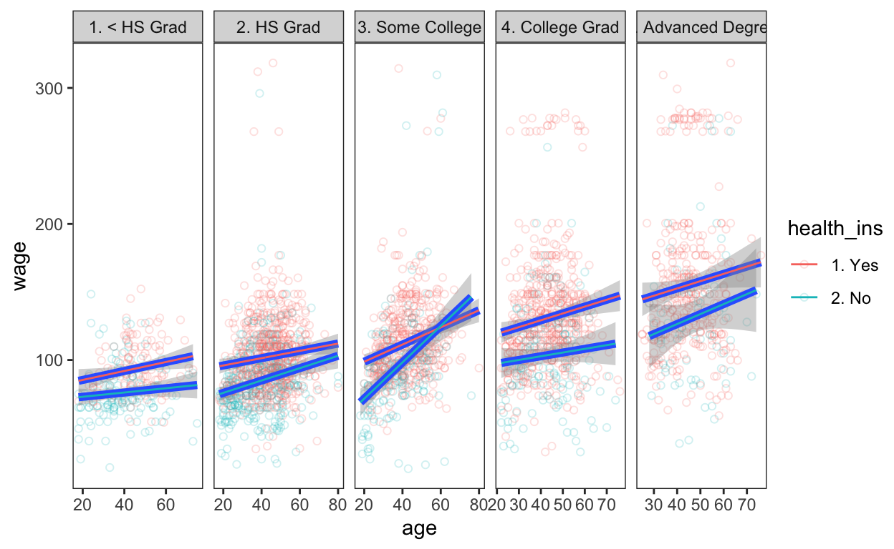

This post as a video
I recommend to watch a video first, because I highlight things I talk about. It’s ca. 7 minutes long.
Why do we need many models?
Have a close look at this linear model. It tells you that the only thing you need to do in order to earn significantly more money - is to get older. But why does one group of people earn so much more, than the others? And is a single model able to catch that groups?
library(ggpubr) # for stat_cor() function
ggplot(Wage, aes(age, wage))+
geom_point(alpha = 0.2)+
geom_smooth(method = lm)+
stat_cor()
Well, when look at education of these 3000 people, we’ll see that most of the richest people have an advanced degree, while most of the poorest people have just a high school or below. And if we create 5 models instead of one, we’ll see a much more useful story.
ggplot(Wage, aes(age, wage))+
geom_point(alpha = 0.7, aes(color = education))+
geom_smooth(method = lm)+
stat_cor()For instance, the increase of salary with age is much higher when you have at least some college degree as compared to no education. So that at the end of life we’ll end up with an impressive salary of 150 thousand dollars, while without any education we’ll never cross 100 thousand mark. So, it seems like education matters, and the slope clearly tells us that! However, despite the fact that the slope of the advanced degree is much smaller, which could suggest that education is not worth the effort, the intercept tells a different story. Namely, that folks who invested into education upfront start their life with the same salary, “some-college” guys reach only at the end of their life.
ggplot(Wage, aes(age, wage))+
geom_point(alpha = 0.2)+
geom_smooth(method = lm)+
facet_grid(. ~ education)+
stat_cor()+
stat_regline_equation(label.y = 240)So, you see how much more useful 5 models are compared to one! But what about 10 model, for example when we group our data for health insurance? What about 20 models when we account for different jobclasses? The more models you create, the more useful insights you’ll get! Then what about 1000 models? … ok, ok, we don’t have to exaggerate. Let’s stick to only 10 models and learn how to easily compute them and get all useful information, like slopes, measures of fit and p-values, out of them.
ggplot(Wage, aes(x = age, y = wage, color = health_ins)) +
geom_point(alpha = 0.1, shape = 1) +
geom_smooth(method = "lm") +
facet_grid(. ~ education, scales = "free")+
stat_cor()+
theme(legend.position = "none")
ggplot(Wage, aes(age, wage, color = health_ins))+
geom_point(alpha = 0.1)+
geom_smooth(method = lm)+
facet_grid(jobclass ~ education)Nested (grouped) data
The Wage data you have seen on the plot is part of the ISLR package. If we have a glimpse at it, we’ll see categorical variables “education” and “health insurance”. A simple cross table reveals how many observations we’ll have in every of our 10 models.
library(tidyverse) # for everything good in R ;)
library(ISLR) # for Wage dataset
Wage %>% glimpse()Rows: 3,000
Columns: 11
$ year <int> 2006, 2004, 2003, 2003, 2005, 2008, 2009, 2008, 2…
$ age <int> 18, 24, 45, 43, 50, 54, 44, 30, 41, 52, 45, 34, 3…
$ maritl <fct> 1. Never Married, 1. Never Married, 2. Married, 2…
$ race <fct> 1. White, 1. White, 1. White, 3. Asian, 1. White,…
$ education <fct> 1. < HS Grad, 4. College Grad, 3. Some College, 4…
$ region <fct> 2. Middle Atlantic, 2. Middle Atlantic, 2. Middle…
$ jobclass <fct> 1. Industrial, 2. Information, 1. Industrial, 2. …
$ health <fct> 1. <=Good, 2. >=Very Good, 1. <=Good, 2. >=Very G…
$ health_ins <fct> 2. No, 2. No, 1. Yes, 1. Yes, 1. Yes, 1. Yes, 1. …
$ logwage <dbl> 4.318063, 4.255273, 4.875061, 5.041393, 4.318063,…
$ wage <dbl> 75.04315, 70.47602, 130.98218, 154.68529, 75.0431…table(Wage$education, Wage$health_ins)
1. Yes 2. No
1. < HS Grad 124 144
2. HS Grad 612 359
3. Some College 467 183
4. College Grad 529 156
5. Advanced Degree 351 75But before we can model, we need to split our data into 10 groups using “group_by()” function and then lock these 10 groups into 10 different data-sets using “nest()” function.
# A tibble: 10 × 3
# Groups: education, health_ins [10]
education health_ins data
<fct> <fct> <list>
1 1. < HS Grad 2. No <tibble [144 × 9]>
2 4. College Grad 2. No <tibble [156 × 9]>
3 3. Some College 1. Yes <tibble [467 × 9]>
4 4. College Grad 1. Yes <tibble [529 × 9]>
5 2. HS Grad 1. Yes <tibble [612 × 9]>
6 2. HS Grad 2. No <tibble [359 × 9]>
7 5. Advanced Degree 2. No <tibble [75 × 9]>
8 5. Advanced Degree 1. Yes <tibble [351 × 9]>
9 3. Some College 2. No <tibble [183 × 9]>
10 1. < HS Grad 1. Yes <tibble [124 × 9]>In a nested data frame each row is a meta-observation (∞ 😂) where categorical variables “education and health insurance” define our 10 groups, while the list-column of 10 data-sets could be seen as 10 lockers which contain individual observations belonging only to a particular combination of education and health insurance. In the first case, 144 people have no education (“1. < HS Grad”) and no health-insurance (“2. No”). And if you think, that a list-column of data-sets is a crazy idea, wait a second, and you’ll see how useful it is.
Rows: 144
Columns: 9
$ year <int> 2006, 2003, 2004, 2006, 2008, 2003, 2009, 2007, 200…
$ age <int> 18, 27, 43, 25, 44, 24, 53, 41, 43, 35, 27, 25, 38,…
$ maritl <fct> 1. Never Married, 2. Married, 1. Never Married, 1. …
$ race <fct> 1. White, 1. White, 1. White, 1. White, 1. White, 1…
$ region <fct> 2. Middle Atlantic, 2. Middle Atlantic, 2. Middle A…
$ jobclass <fct> 1. Industrial, 1. Industrial, 1. Industrial, 1. Ind…
$ health <fct> 1. <=Good, 2. >=Very Good, 1. <=Good, 2. >=Very Goo…
$ logwage <dbl> 4.318063, 4.193125, 3.812913, 4.193125, 4.477121, 3…
$ wage <dbl> 75.04315, 66.22941, 45.28217, 66.22941, 87.98103, 5…How does this work amd why it is so useful?
Imagine you’d need to write a code for 10 different models. That is not only a lot of work, but is also prone to mistakes. Moreover, you’d need to store and organize 10 different model objects somehow, because they contain information you need. And while it kind of works for 10 models, what if you really need 1000 or more?
m1 <- lm(wage ~ age,
data = Wage %>% filter(education == "1. < HS Grad", health_ins == "2. No"))
m2 <- lm(wage ~ age,
data = Wage %>% filter(education == "4. College Grad", health_ins == "2. No"))
m3 <- lm(wage ~ age,
data = Wage %>% filter(education == "3. Some College", health_ins == "1. Yes"))
m4 <- lm(wage ~ age,
data = Wage %>% filter(education == "4. College Grad", health_ins == "1. Yes"))
m5 <- lm(wage ~ age,
data = Wage %>% filter(education == "2. HS Grad", health_ins == "1. Yes"))
m6 <- lm(wage ~ age,
data = Wage %>% filter(education == "2. HS Grad", health_ins == "2. No"))
m7 <- lm(wage ~ age,
data = Wage %>% filter(education == "5. Advanced Degree", health_ins == "2. No"))
m8 <- lm(wage ~ age,
data = Wage %>% filter(education == "5. Advanced Degree", health_ins == "1. Yes"))
m9 <- lm(wage ~ age,
data = Wage %>% filter(education == "3. Some College", health_ins == "2. No"))
m10 <- lm(wage ~ age,
data = Wage %>% filter(education == "1. < HS Grad", health_ins == "1. Yes"))map() function rocks!
Well, map() function from {purrr} package provides a much better way! Because it applies a function of your choice to each element of a list. For example, if we want to multiply every element of our list by 10, we “map()” over every element of this list, where every element is represented by the DOT - “.”
Similarly, we can “map()” over every meta-observation (∞ 😂) of our nested data-frame and apply a linear regression to every of the 10 data-frames which are stored in the list-column we called “data”. Moreover, rather than leaving the list of models as a free-floating objects (flies flying around trash, or free floating things in space), it’s much better to store all our models in the next list-column, let’s call this list-column “models”. On top of that let’s now “map()” over our models in order to extract the coefficients with 95% CIs, model quality indicators and even predictions and store them all in separate list-columns.
library(broom) # for tidy(), glance() & augment() functions
nested_models <- nested_data %>%
mutate(models = map(data, ~ lm(wage ~ age, data = .)),
coefs = map(models, tidy, conf.int = TRUE),
quality = map(models, glance),
preds = map(models, augment))
nested_models# A tibble: 10 × 7
# Groups: education, health_ins [10]
education healt…¹ data models coefs quality preds
<fct> <fct> <list> <list> <list> <list> <list>
1 1. < HS Grad 2. No <tibble> <lm> <tibble> <tibble> <tibble>
2 4. College Grad 2. No <tibble> <lm> <tibble> <tibble> <tibble>
3 3. Some College 1. Yes <tibble> <lm> <tibble> <tibble> <tibble>
4 4. College Grad 1. Yes <tibble> <lm> <tibble> <tibble> <tibble>
5 2. HS Grad 1. Yes <tibble> <lm> <tibble> <tibble> <tibble>
6 2. HS Grad 2. No <tibble> <lm> <tibble> <tibble> <tibble>
7 5. Advanced Deg… 2. No <tibble> <lm> <tibble> <tibble> <tibble>
8 5. Advanced Deg… 1. Yes <tibble> <lm> <tibble> <tibble> <tibble>
9 3. Some College 2. No <tibble> <lm> <tibble> <tibble> <tibble>
10 1. < HS Grad 1. Yes <tibble> <lm> <tibble> <tibble> <tibble>
# … with abbreviated variable name ¹health_insNow, with a minimum of code, where it is difficult to make any mistake, we have created a small and clean nested data-frame with 5 list-columns, where all the related objects are stored together. Hallelujah! ;) Such nested data-frame could be seen as a well organized cabinet with 50 lockers containing all important information we need, which is easily accessible anytime we want. For example:
- we can have a look at the first model or it’s coeffitients,
- we can check all assumptions of the second model at once using check_model() function from the {performance} package, which I already reviewed on this channel,
- we can look at the model quality of, let’s say, a model N°4 or
- we can plot predictions of a model N°9 using plot_model() function from another amazing package {sjPlot} I also have an extra video about
nested_models$models[[1]]
Call:
lm(formula = wage ~ age, data = .)
Coefficients:
(Intercept) age
69.8032 0.1572 nested_models$coefs[[1]]# A tibble: 2 × 7
term estimate std.error statistic p.value conf.low conf.high
<chr> <dbl> <dbl> <dbl> <dbl> <dbl> <dbl>
1 (Intercept) 69.8 5.36 13.0 5.00e-26 59.2 80.4
2 age 0.157 0.131 1.20 2.30e- 1 -0.101 0.415nested_models$models[[2]] %>% performance::check_model()
Rows: 1
Columns: 12
$ r.squared <dbl> 0.01700412
$ adj.r.squared <dbl> 0.01513886
$ sigma <dbl> 40.33913
$ statistic <dbl> 9.116186
$ p.value <dbl> 0.002656313
$ df <dbl> 1
$ logLik <dbl> -2705.5
$ AIC <dbl> 5417
$ BIC <dbl> 5429.813
$ deviance <dbl> 857558.2
$ df.residual <int> 527
$ nobs <int> 529
Unnest results
map(nested_models$models, sjPlot::plot_model, type = "pred", show.data = TRUE)And despite the fact, that we could easily plot all 10 models by “mapping” through the whole list of models, it is sometimes better to simply “unnest()” the list-column back into a regular data frame. This is useful, when we want to put all the results below each other to see the big picture, be able to sort, compare or plot all 10 models simultaneously.
Unnest coefficients
For example, we can unnest() the coefficients and see all 10 models below each other.
library(flextable) # for a good looking table
nested_models %>%
unnest(coefs) %>%
select(-data, -models, -quality, -preds) %>%
mutate_if(is.numeric, ~ round(., 2)) %>%
regulartable() %>%
autofit()education | health_ins | term | estimate | std.error | statistic | p.value | conf.low | conf.high |
1. < HS Grad | 2. No | (Intercept) | 69.80 | 5.36 | 13.03 | 0.00 | 59.21 | 80.39 |
1. < HS Grad | 2. No | age | 0.16 | 0.13 | 1.20 | 0.23 | -0.10 | 0.42 |
4. College Grad | 2. No | (Intercept) | 91.84 | 10.48 | 8.76 | 0.00 | 71.13 | 112.55 |
4. College Grad | 2. No | age | 0.27 | 0.24 | 1.15 | 0.25 | -0.20 | 0.74 |
3. Some College | 1. Yes | (Intercept) | 86.14 | 4.93 | 17.48 | 0.00 | 76.46 | 95.83 |
3. Some College | 1. Yes | age | 0.63 | 0.11 | 5.57 | 0.00 | 0.41 | 0.85 |
4. College Grad | 1. Yes | (Intercept) | 109.06 | 7.36 | 14.83 | 0.00 | 94.61 | 123.51 |
4. College Grad | 1. Yes | age | 0.50 | 0.17 | 3.02 | 0.00 | 0.18 | 0.83 |
2. HS Grad | 1. Yes | (Intercept) | 90.59 | 4.47 | 20.25 | 0.00 | 81.80 | 99.37 |
2. HS Grad | 1. Yes | age | 0.27 | 0.10 | 2.74 | 0.01 | 0.08 | 0.46 |
2. HS Grad | 2. No | (Intercept) | 66.75 | 4.49 | 14.86 | 0.00 | 57.92 | 75.58 |
2. HS Grad | 2. No | age | 0.45 | 0.11 | 4.12 | 0.00 | 0.24 | 0.67 |
5. Advanced Degree | 2. No | (Intercept) | 97.06 | 25.91 | 3.75 | 0.00 | 45.43 | 148.70 |
5. Advanced Degree | 2. No | age | 0.73 | 0.53 | 1.38 | 0.17 | -0.33 | 1.80 |
5. Advanced Degree | 1. Yes | (Intercept) | 131.15 | 13.02 | 10.08 | 0.00 | 105.55 | 156.75 |
5. Advanced Degree | 1. Yes | age | 0.54 | 0.29 | 1.88 | 0.06 | -0.03 | 1.10 |
3. Some College | 2. No | (Intercept) | 44.84 | 8.74 | 5.13 | 0.00 | 27.59 | 62.08 |
3. Some College | 2. No | age | 1.34 | 0.22 | 6.04 | 0.00 | 0.90 | 1.77 |
1. < HS Grad | 1. Yes | (Intercept) | 78.74 | 6.91 | 11.39 | 0.00 | 65.06 | 92.43 |
1. < HS Grad | 1. Yes | age | 0.33 | 0.15 | 2.22 | 0.03 | 0.04 | 0.62 |
Unnest model quality
We could:
- unnest() list-column “quality” to extract some model quality indicators,
- easily remove some unnecessary columns and
- sort the data-frame for “r.squared” in order to rank the goodness of fit of our model and see models that don’t fit well first.
The worst model appears to be for College Graduates with no health insurance … how could they?
nested_models %>%
unnest(quality) %>%
select(-data, -models, -coefs, -df, -df.residual, -deviance, -preds) %>%
arrange(adj.r.squared) %>%
mutate_if(is.numeric, ~ round(., 2)) %>%
regulartable() %>%
autofit()education | health_ins | r.squared | adj.r.squared | sigma | statistic | p.value | logLik | AIC | BIC | nobs |
4. College Grad | 2. No | 0.01 | 0.00 | 35.77 | 1.31 | 0.25 | -778.39 | 1,562.77 | 1,571.92 | 156 |
1. < HS Grad | 2. No | 0.01 | 0.00 | 20.14 | 1.45 | 0.23 | -635.69 | 1,277.38 | 1,286.29 | 144 |
5. Advanced Degree | 1. Yes | 0.01 | 0.01 | 53.33 | 3.53 | 0.06 | -1,892.83 | 3,791.66 | 3,803.24 | 351 |
2. HS Grad | 1. Yes | 0.01 | 0.01 | 27.56 | 7.51 | 0.01 | -2,897.11 | 5,800.22 | 5,813.47 | 612 |
5. Advanced Degree | 2. No | 0.03 | 0.01 | 51.51 | 1.89 | 0.17 | -401.04 | 808.08 | 815.04 | 75 |
4. College Grad | 1. Yes | 0.02 | 0.02 | 40.34 | 9.12 | 0.00 | -2,705.50 | 5,417.00 | 5,429.81 | 529 |
1. < HS Grad | 1. Yes | 0.04 | 0.03 | 18.90 | 4.92 | 0.03 | -539.42 | 1,084.83 | 1,093.30 | 124 |
2. HS Grad | 2. No | 0.05 | 0.04 | 25.78 | 17.00 | 0.00 | -1,674.98 | 3,355.96 | 3,367.61 | 359 |
3. Some College | 1. Yes | 0.06 | 0.06 | 26.99 | 31.02 | 0.00 | -2,200.62 | 4,407.24 | 4,419.68 | 467 |
3. Some College | 2. No | 0.17 | 0.16 | 36.04 | 36.51 | 0.00 | -914.66 | 1,835.31 | 1,844.94 | 183 |
Unnest predictions
And lastly,
- we could easily unnest() our predictions in a separate data-frame, then
- plot() original data and linear models which are already build into the classic ggplot() commands, by intentionally living same blue color for different insurances and making them a little bigger, and finally
- plot our predictions on top of them with different colors in order to see whether our predictions worked well, and voilà, our predictions perfectly fitted the blue lines!
# A tibble: 3,000 × 14
# Groups: education, health_ins [10]
education health…¹ data models coefs quality wage age
<fct> <fct> <list> <list> <list> <list> <dbl> <int>
1 1. < HS Grad 2. No <tibble> <lm> <tibble> <tibble> 75.0 18
2 1. < HS Grad 2. No <tibble> <lm> <tibble> <tibble> 66.2 27
3 1. < HS Grad 2. No <tibble> <lm> <tibble> <tibble> 45.3 43
4 1. < HS Grad 2. No <tibble> <lm> <tibble> <tibble> 66.2 25
5 1. < HS Grad 2. No <tibble> <lm> <tibble> <tibble> 88.0 44
6 1. < HS Grad 2. No <tibble> <lm> <tibble> <tibble> 51.5 24
7 1. < HS Grad 2. No <tibble> <lm> <tibble> <tibble> 68.1 53
8 1. < HS Grad 2. No <tibble> <lm> <tibble> <tibble> 88.0 41
9 1. < HS Grad 2. No <tibble> <lm> <tibble> <tibble> 86.7 43
10 1. < HS Grad 2. No <tibble> <lm> <tibble> <tibble> 59.1 35
# … with 2,990 more rows, 6 more variables: .fitted <dbl>,
# .resid <dbl>, .hat <dbl>, .sigma <dbl>, .cooksd <dbl>,
# .std.resid <dbl>, and abbreviated variable name ¹health_insggplot(Wage, aes(x = age, y = wage, group = health_ins)) +
geom_point(aes(color = health_ins), alpha = 0.2, shape = 1) +
geom_smooth(method = "lm", size = 2) +
facet_grid(. ~ education, scales = "free") +
geom_line(data = unnested_preds, aes(y = .fitted, age, color = health_ins)) 
This beautiful picture is worth a thousand words, but if you need words and want to learn how to easily and correctly report statistical results with text, you need to watch this video!
If you think, I missed something, please comment on it, and I’ll improve this tutorial.
Thank you for learning!